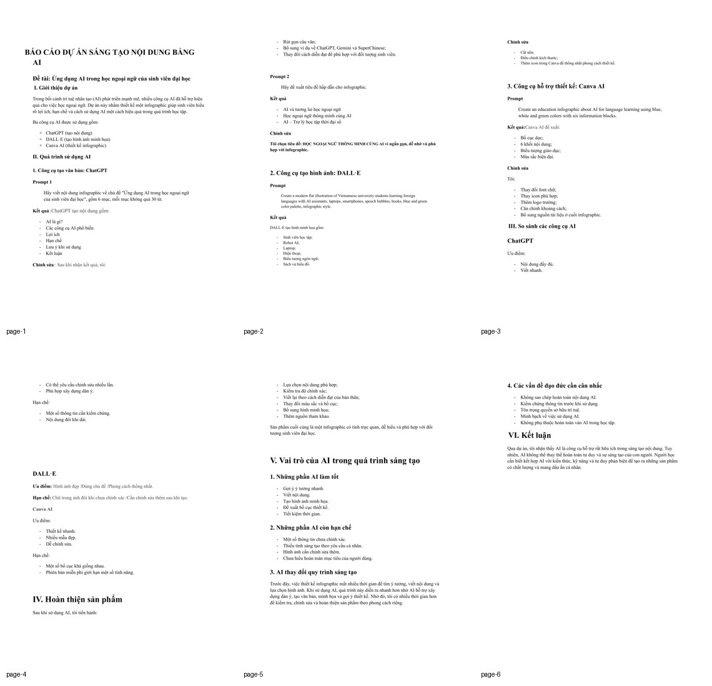
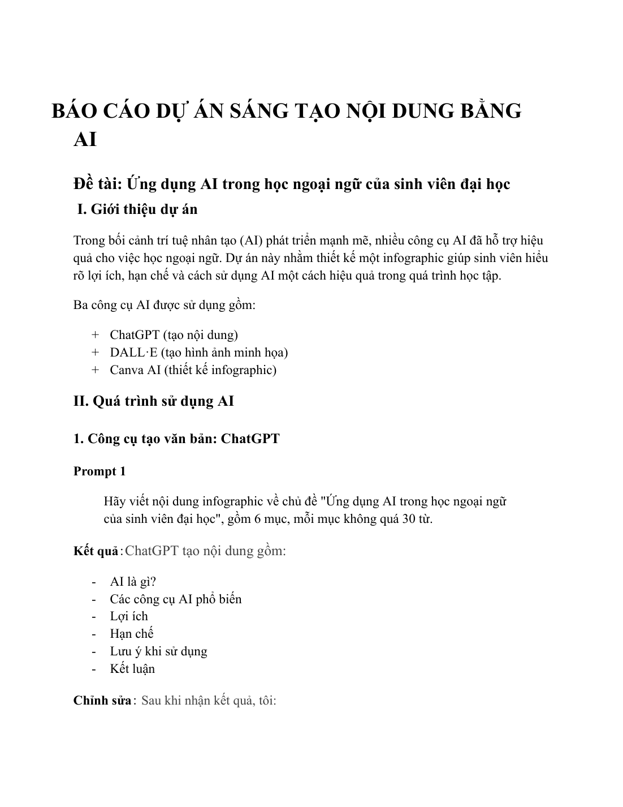
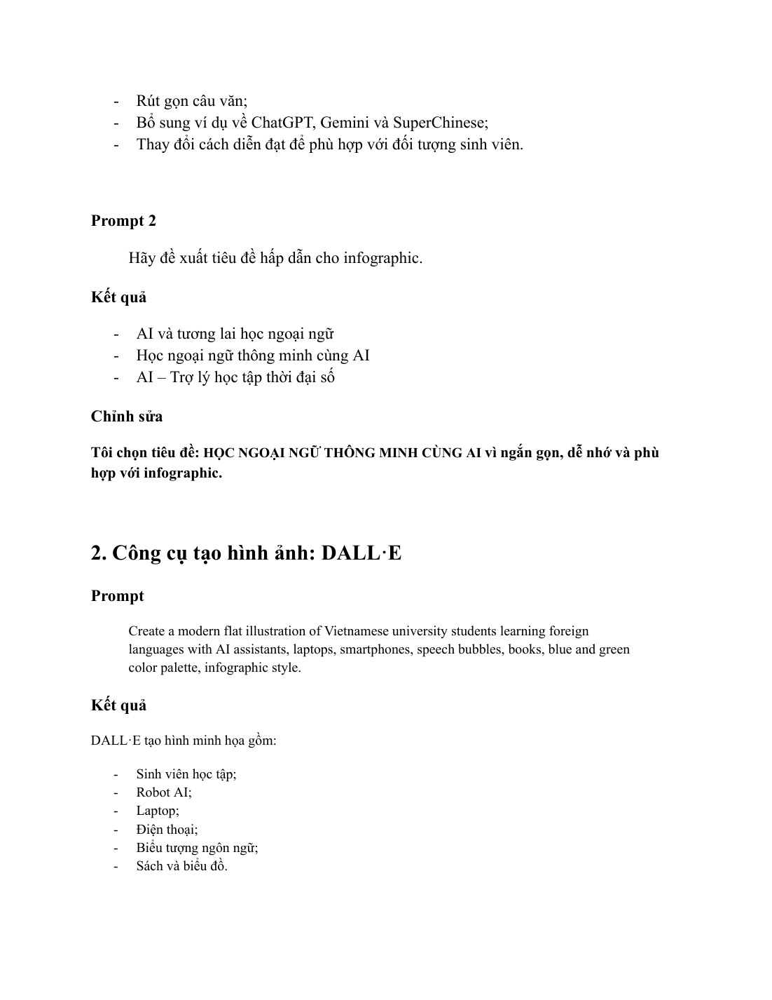
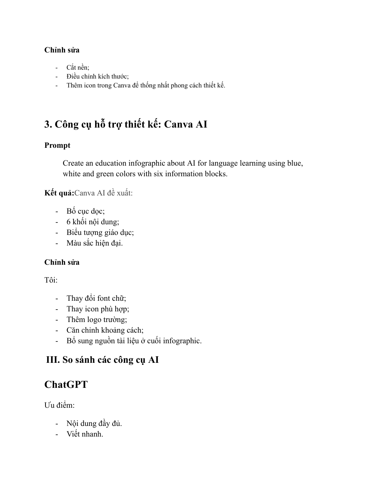
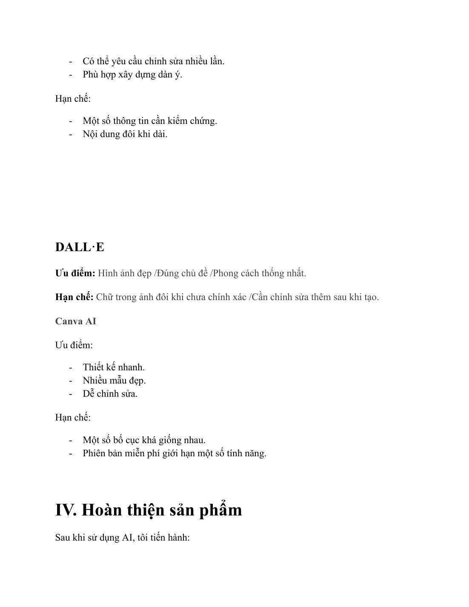
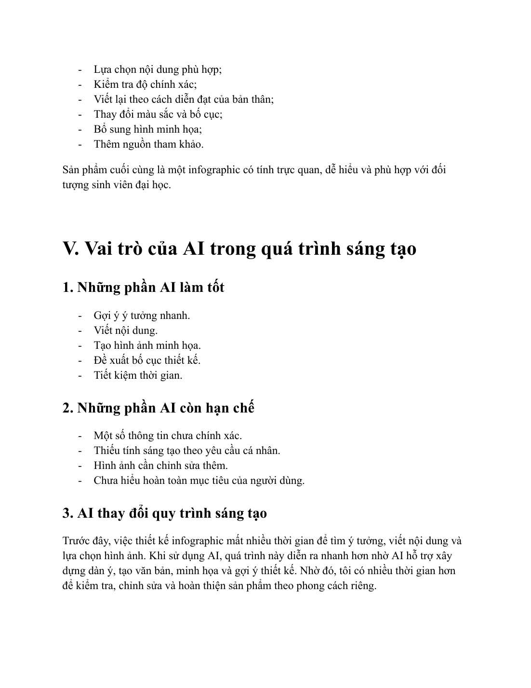
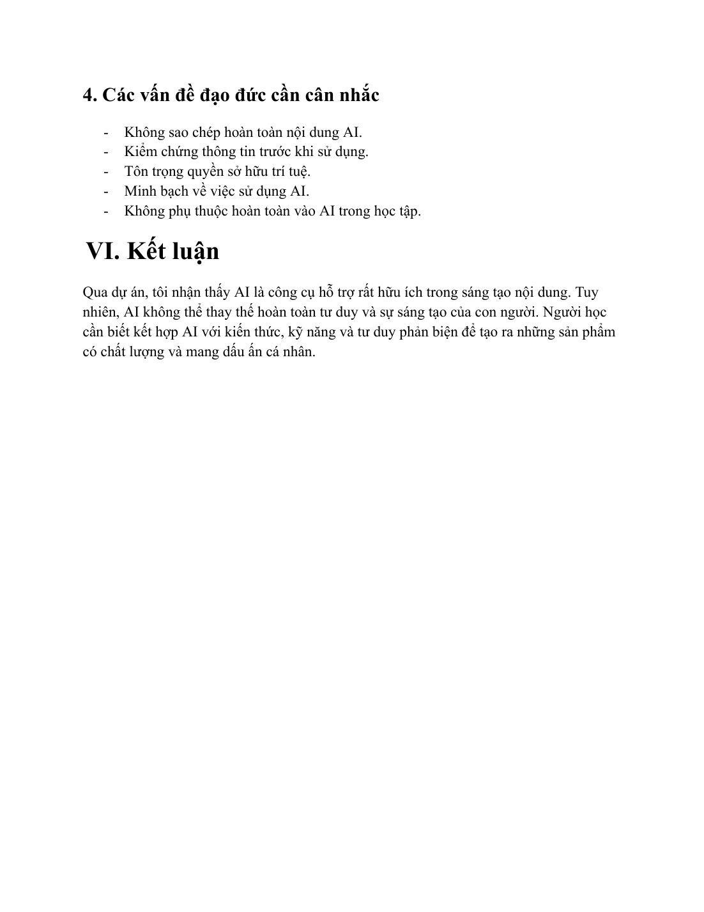

Ở bài này, mình xây dựng một infographic về ứng dụng AI trong học ngoại ngữ của sinh viên đại học. Ba công cụ được sử dụng là ChatGPT để viết nội dung, DALL·E để tạo hình minh hoạ và Canva AI để bố cục và hoàn thiện thiết kế.
ChatGPTDALL·ECanva AI

Khái quát bài làm
Ý tưởng và định hướng trình bày
Bài làm không dừng ở việc dùng AI, mà còn phân tích cách mình chọn lọc, chỉnh sửa và biến đầu ra đó thành sản phẩm mang dấu ấn cá nhân.
Trong phiên bản website, nội dung được viết lại bằng lời văn mạch lạc hơn để tránh lỗi font và giảm cảm giác sao chép nguyên văn từ tài liệu gốc. Mỗi phần đều giữ đúng tinh thần bài làm ban đầu, đồng thời sắp xếp theo nguyên tắc: phần chữ đi trước, ảnh minh chứng đi sau.
Phần 1
Quy trình làm nội dung và tạo hình ảnh
Trước tiên, mình dùng ChatGPT để xây dựng phần chữ cho infographic. Prompt được viết theo hướng ngắn gọn, yêu cầu rõ số lượng mục và độ dài nội dung để AI tạo ra khung thông tin dễ triển khai.
Sau đó, mình dùng DALL·E để tạo một minh hoạ theo phong cách phẳng, hiện đại, có sinh viên, thiết bị số và trợ lý AI. Hình ảnh AI tạo ra chỉ là điểm khởi đầu; mình tiếp tục cắt nền, tinh chỉnh và kết hợp thêm icon để phù hợp với tổng thể thiết kế.

Minh chứng 1 – tư liệu gốc được đặt ngay sau phần nội dung liên quan.

Minh chứng 2 – tư liệu gốc được đặt ngay sau phần nội dung liên quan.
Phần 2
Thiết kế infographic và hoàn thiện sản phẩm
Tiếp theo, mình chuyển sang Canva AI để thử bố cục. Công cụ này giúp đề xuất dạng infographic dọc với sáu khối nội dung, tông màu xanh – trắng – xanh lá và nhiều biểu tượng học tập trực quan.
Ở bước hoàn thiện, mình chủ động thay đổi font chữ, căn chỉnh khoảng cách, thêm logo trường và bổ sung nguồn tham khảo. Nhờ vậy, sản phẩm cuối không chỉ đúng chủ đề mà còn chỉn chu về mặt trình bày.

Minh chứng 1 – tư liệu gốc được đặt ngay sau phần nội dung liên quan.

Minh chứng 2 – tư liệu gốc được đặt ngay sau phần nội dung liên quan.
Phần 3
Phân tích vai trò của AI
Phần cuối bài báo cáo so sánh ưu – nhược điểm của từng công cụ. ChatGPT mạnh ở khâu lên ý tưởng và tạo dàn ý; DALL·E phù hợp khi cần hình minh hoạ nhanh; Canva AI giúp rút ngắn thời gian thiết kế. Tuy nhiên, cả ba đều cần người dùng kiểm tra, chọn lọc và chỉnh sửa lại.
Từ trải nghiệm này, mình nhận ra AI thực sự hữu ích nếu được dùng như một trợ lý. AI giúp tiết kiệm thời gian, nhưng sự chính xác, tính cá nhân hoá và quyết định cuối cùng vẫn thuộc về người học.

Minh chứng 1 – tư liệu gốc được đặt ngay sau phần nội dung liên quan.

Minh chứng 2 – tư liệu gốc được đặt ngay sau phần nội dung liên quan.
Bảng tổng hợp
So sánh ba công cụ AI đã sử dụng
Công cụ
Điểm mạnh
Điểm cần lưu ý
ChatGPT
Viết nhanh, tạo dàn ý tốt, dễ yêu cầu chỉnh sửa nhiều lần
Thông tin đôi khi cần kiểm chứng và có thể dài hơn mong muốn
DALL·E
Tạo minh hoạ đẹp, đúng chủ đề, phong cách khá đồng nhất
Chữ trong ảnh có thể chưa chính xác và thường cần chỉnh sửa thêm
Canva AI
Tạo bố cục nhanh, dễ chỉnh sửa, có nhiều mẫu đẹp
Một số bố cục còn lặp lại và bản miễn phí giới hạn tính năng
Kết quả & cảm nhận
Điều mình rút ra sau bài tập
Bài làm giúp mình hiểu rõ hơn về quy trình sáng tạo có sự hỗ trợ của AI. AI giúp mình đi nhanh hơn, nhưng chất lượng cuối cùng vẫn phụ thuộc vào khả năng chọn lọc và biên tập của bản thân.